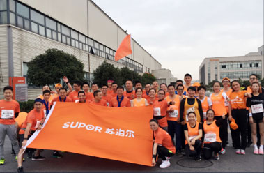

激情越马，勇者无畏！——记2017绍兴国际马拉松赛(2017-11-07)
2/8

11月11日，2017绍兴国际马拉松赛在绍兴市奥体中心鸣枪开跑，本次国际马拉松赛共有来自27个国家和地区的15000名跑者参加。绍兴基地20余名运动健儿组成马拉松跑团激情高昂地参与了本次国际马拉松赛事，从镜湖奥体中心出发，沿着连片水域穿行于水城绍兴，奔跑不息，勇往直前，完成了挑战自我、超越极
限之旅。对体能要求相对较低，竞技要求降低，以达到锻炼身体、娱乐身心，营造气氛的效果。
早上6点40分，大家精神抖擞、斗志昂扬地抵达马拉松比赛现场，进行赛前热身，此时此刻大家精神饱满，相互加油鼓劲，把这次马拉松赛看作是对自己体能和意志的考验。
当在首次回购股份事实发生的次日予以公告。现将公司首次回购股份情况公告如下：